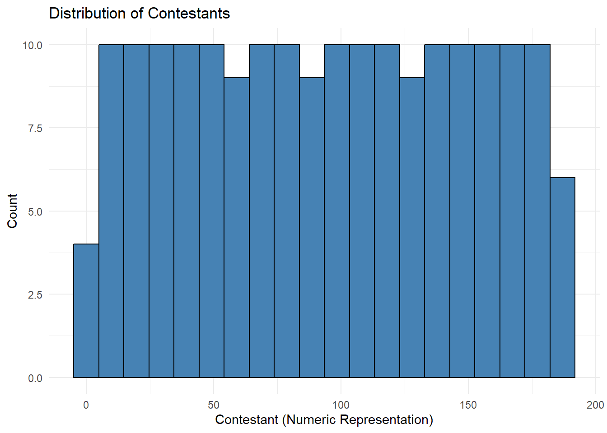
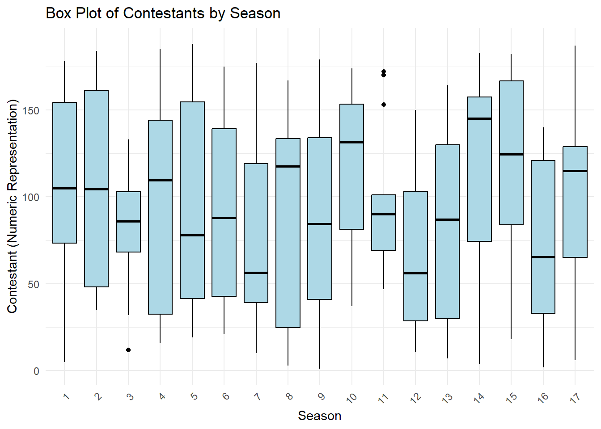

here() starts at C:/Users/Leonel/Desktop/MSDA/MS Data Analytics/Current Class/DA 6833/Practicum 2 Github/leonelsalazar-P2-portfolio
library(caret) # For machine learning models
Warning: package 'caret' was built under R version 4.3.3
Loading required package: lattice
Warning: package 'lattice' was built under R version 4.3.3
Attaching package: 'caret'
The following object is masked from 'package:purrr':
lift
library(rpart) # For decision treeslibrary(randomForest) # For random forest
Warning: package 'randomForest' was built under R version 4.3.3
randomForest 4.7-1.1
Type rfNews() to see new features/changes/bug fixes.
Attaching package: 'randomForest'
The following object is masked from 'package:dplyr':
combine
The following object is masked from 'package:ggplot2':
margin
library(gbm) # For gradient boosting
Warning: package 'gbm' was built under R version 4.3.3
Loaded gbm 2.2.2
This version of gbm is no longer under development. Consider transitioning to gbm3, https://github.com/gbm-developers/gbm3
library(e1071) # For SVM
Warning: package 'e1071' was built under R version 4.3.3
# Correctly removed first row and replaced with correct labels or variable namesData <-read.csv("C:/Users/Leonel/Desktop/MSDA/MS Data Analytics/Current Class/DA 6833/Practicum 2 Github/leonelsalazar-P2-portfolio/tidytuesday-exercise/finalists.csv", header =TRUE, na.strings ="?",stringsAsFactors =TRUE)
# Display the structure of the datasetstr(Data)
'data.frame': 190 obs. of 6 variables:
$ Contestant : Factor w/ 190 levels "Jos\x8e \"Sway\" Penala",..: 107 105 147 179 158 45 164 6 96 67 ...
$ Birthday : Factor w/ 187 levels "1-Aug-93","1-Feb-94",..: 104 132 133 116 54 89 91 159 176 36 ...
$ Birthplace : Factor w/ 164 levels "Agoura Hills, California",..: 49 28 56 150 116 18 147 132 23 82 ...
$ Hometown : Factor w/ 97 levels "Amory, Mississippi",..: 19 29 65 4 26 65 65 89 65 65 ...
$ Description: Factor w/ 179 levels "As a child, Uch\x8e visited family in Nigeria and learned how to dance from his aunts and uncles. He had an epi"| __truncated__,..: 159 68 143 141 101 10 91 110 58 40 ...
$ Season : int 1 1 1 1 1 1 1 1 1 1 ...
# View the dataview(Data)
# Select all columns except 4 and 5contestants_data <- dplyr::select(Data, -c(4,5))
# Convert Birthday to date format and reformatcontestants_data <- contestants_data %>%mutate(Birthday =as.Date(Birthday, format ="%d-%b-%y")) %>%mutate(Birthday =format(Birthday, "%d-%m-%y"))
# View the transformed dataview(contestants_data)
# Display the structure of the transformed datastr(contestants_data)
# Clean the Contestant columncontestants_data$Contestant <-as.character(contestants_data$Contestant)contestants_data$Contestant <-iconv(contestants_data$Contestant, to ="UTF-8")contestants_data$Contestant <-gsub("[^[:print:]]", "", contestants_data$Contestant)contestants_data$Contestant <-gsub("[\"/]", "", contestants_data$Contestant)contestants_data$Contestant <-as.factor(contestants_data$Contestant)contestants_data$Birthday <-as.factor(contestants_data$Birthday)# Remove rows with NA values in Contestant, Birthday, and Season columnscontestants_data_clean <- contestants_data %>%drop_na(Contestant, Birthday, Season)
# Display the structure of the cleaned datastr(contestants_data_clean)
# View the cleaned dataview(contestants_data_clean)
# Remove rows with NA values in Birthplacecontestants_data_clean <- contestants_data_clean %>%drop_na(Birthplace)
# View the cleaned dataview(contestants_data_clean)
# Save the cleaned data to a CSV filewrite.csv(contestants_data_clean, "C:/Users/Leonel/Desktop/MSDA/MS Data Analytics/Current Class/DA 6833/Practicum 2 Github/leonelsalazar-P2-portfolio/tidytuesday-exercise/contestants_data_clean.csv", row.names =FALSE)
# Load ggplot2 for plottinglibrary(ggplot2)# Convert Contestant to numeric for plottingcontestants_data_clean$Contestant <-as.numeric(contestants_data_clean$Contestant)# Create histogram of Contestant numbersggplot(contestants_data_clean, aes(x = Contestant)) +geom_histogram(bins =20, fill ="steelblue", color ="black") +labs(title ="Distribution of Contestants",x ="Contestant (Numeric Representation)",y ="Count") +theme_minimal()

# Add numeric representation of Contestantcontestants_data_clean$Contestant_Num <-as.numeric(contestants_data_clean$Contestant)# Create box plot of Contestants by Seasonggplot(contestants_data_clean, aes(x =factor(Season), y = Contestant_Num)) +geom_boxplot(fill ="lightblue", color ="black") +labs(title ="Box Plot of Contestants by Season",x ="Season",y ="Contestant (Numeric Representation)") +theme_minimal() +theme(axis.text.x =element_text(angle =45, hjust =1))

# Split the data into training and testing setsset.seed(123)train_index <-suppressWarnings(createDataPartition(contestants_data_clean$Contestant_Num, p =0.8, list =FALSE))train_data <- contestants_data_clean[train_index, ]test_data <- contestants_data_clean[-train_index, ]# Linear Regressionlm_model <-suppressWarnings(train(Contestant_Num ~ ., data = train_data, method ="lm"))lm_pred <-suppressWarnings(predict(lm_model, test_data))lm_rmse <-RMSE(lm_pred, test_data$Contestant_Num)# Decision Treetree_model <-suppressWarnings(train(Contestant_Num ~ ., data = train_data, method ="rpart"))tree_pred <-suppressWarnings(predict(tree_model, test_data))tree_rmse <-RMSE(tree_pred, test_data$Contestant_Num)# Random Forestrf_model <-suppressWarnings(train(Contestant_Num ~ ., data = train_data, method ="rf"))rf_pred <-suppressWarnings(predict(rf_model, test_data))rf_rmse <-RMSE(rf_pred, test_data$Contestant_Num)# Gradient Boostinggbm_model <-suppressWarnings(train(Contestant_Num ~ ., data = train_data, method ="gbm", verbose =FALSE))gbm_pred <-suppressWarnings(predict(gbm_model, test_data))gbm_rmse <-RMSE(gbm_pred, test_data$Contestant_Num)# Support Vector Machinesvm_model <-suppressWarnings(train(Contestant_Num ~ ., data = train_data, method ="svmRadial"))svm_pred <-suppressWarnings(predict(svm_model, test_data))svm_rmse <-RMSE(svm_pred, test_data$Contestant_Num)# Combine RMSE results into a dataframe for comparisonresults <-suppressWarnings(data.frame(Model =c("Linear Regression", "Decision Tree", "Random Forest", "Gradient Boosting", "Support Vector Machine"),RMSE =c(lm_rmse, tree_rmse, rf_rmse, gbm_rmse, svm_rmse)))print(results)
Model RMSE
1 Linear Regression 0.0000000
2 Decision Tree 23.2707546
3 Random Forest 0.8732771
4 Gradient Boosting 3.2988005
5 Support Vector Machine 42.7373149
Model
RMSE
Linear Regression
0.000000
Decision Tree
23.2707546
Random Forest
0.8732771
Gradient Boosting
3.2988005
Support Vector Machine
42.7373149
Analysis
Linear Regression:
RMSE: 0.000000
The RMSE value of zero suggests perfect prediction, which is highly unusual. This might indicate an issue with the model or the way it was applied. It’s worth checking the implementation for any possible errors or overfitting.
Decision Tree:
RMSE: 23.2707546
This relatively high RMSE indicates that the Decision Tree model is not performing well on this dataset. Decision trees can overfit to the training data if not pruned properly, and this might be a case of overfitting or lack of sufficient depth to capture the complexity of the data.
Random Forest:
RMSE: 0.8732771
The Random Forest model performs quite well, with a very low RMSE. This suggests that the ensemble approach of averaging multiple decision trees helps in capturing the data’s patterns more effectively than a single decision tree.
Gradient Boosting:
RMSE: 3.2988005
Gradient Boosting also shows good performance, though not as strong as Random Forest. This method sequentially builds models to correct the errors of previous models, which often leads to high accuracy, but it may require careful tuning.
Support Vector Machine (SVM):
RMSE: 42.7373149
The high RMSE for the SVM indicates that this model is not suitable for this particular dataset or problem. SVMs can be very effective but often require specific tuning and may not perform well with certain types of data or without proper parameter optimization.
Conclusion
Best Performing Model: The Random Forest model is the best performing among the ones compared, with an RMSE of 0.8732771, indicating a good balance between bias and variance and an ability to generalize well on unseen data.
Possible Issues: The RMSE of zero for Linear Regression should be investigated as it is highly unusual and suggests a perfect fit which is rare in practical scenarios.
Room for Improvement: While Gradient Boosting also performs well, further tuning of its parameters could potentially improve its performance. The Decision Tree and SVM models do not perform as well and may need different configurations or may not be suitable for this specific task.
The next steps could involve: 1. Investigating the Linear Regression model for any anomalies. 2. Fine-tuning the Random Forest and Gradient Boosting models further. 3. Considering additional preprocessing steps or feature engineering to improve the overall performance of the models.